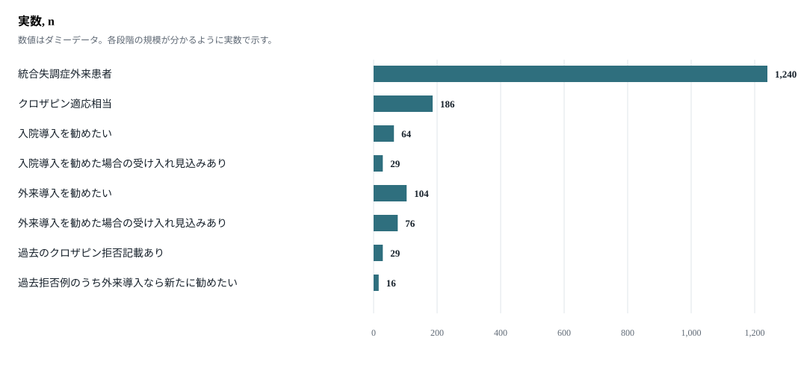
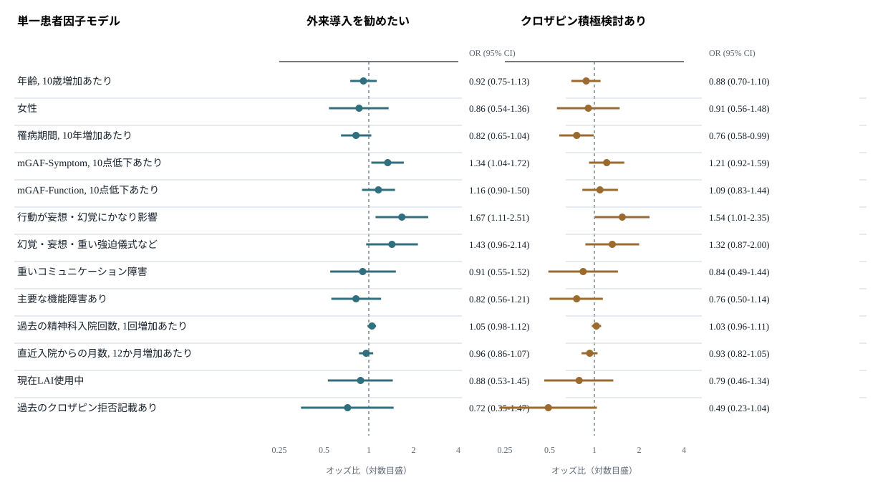
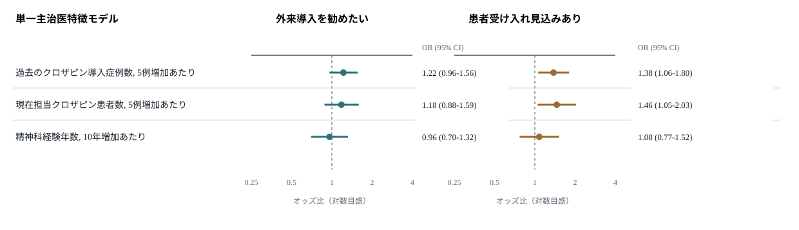
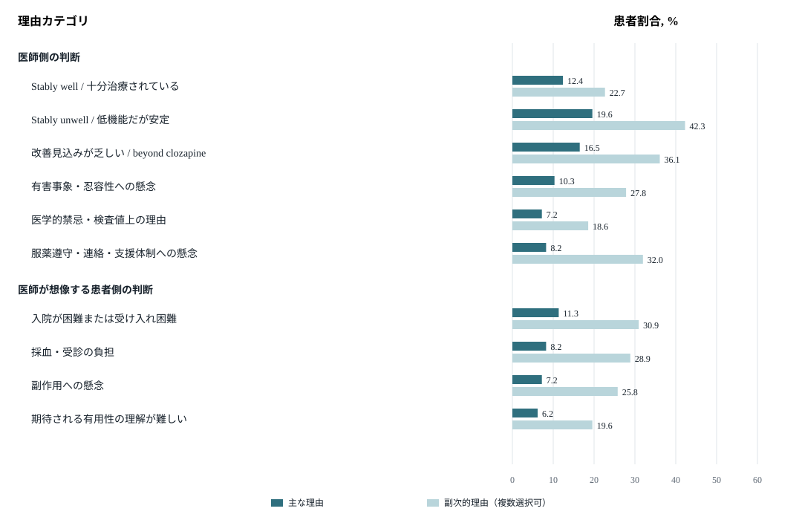
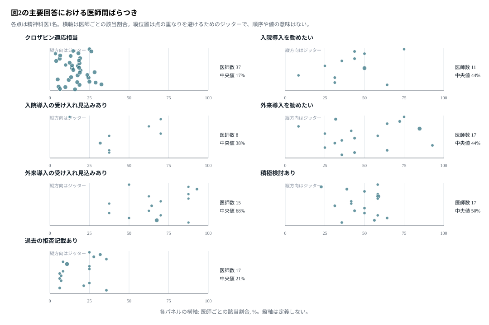

推奨図表セット
| 表示 | 主な目的 | 本文/補足 |
|---|---|---|
| 表1 | 回答した精神科医の背景を示す | 本文 |
| 表2 | 精神科医が評価したクロザピン適応相当症例の患者背景を示す | 本文 |
| 図1 | クロザピン適応相当症例から入院/外来導入推奨、患者受容見込みまでを実数で示す | 本文 |
| 図2 | 表2の患者特徴と外来導入推奨・積極検討との関連を示す | 本文 |
| 図3 | 主治医特徴と主治医判断アウトカムとの関連を示す | 本文 |
| 図4 | 積極検討しない理由を、医師判断と医師が想像する患者判断に分けて示す | 本文 |
| 表3 | 患者受容性情報、自殺予防情報、外来導入頻度シナリオのfactorial RCT効果推定を示す | 補足または本文 |
| 補足図S1 | 図1の主要回答に関する医師間ばらつきを小パネルで示す | 補足 |
| 補足表S1 | 積極検討しない理由の詳細数値を示す | 補足 |
表1. 回答した精神科医の背景
| 項目 | 全体 n = 50 | 岡山 n = 31 | 山梨 n = 19 |
|---|---|---|---|
| 精神科経験年数, 中央値 (IQR) | 12 (6-16) | 13 (8-17) | 12 (6-14) |
| 精神科専門医, n (%) | 42 (84.0) | 27 (87.1) | 15 (78.9) |
| 精神保健指定医, n (%) | 38 (76.0) | 24 (77.4) | 14 (73.7) |
| 過去のクロザピン導入症例数, 中央値 (IQR) | 2 (1-4) | 3 (2-5) | 2 (1-3) |
| 現在担当しているクロザピン処方患者数, 中央値 (IQR) | 1 (0-2) | 1 (0-2) | 1 (0-2) |
| 精神科医1名あたり評価患者数, 中央値 (IQR) | 21 (13-33) | 20 (14-32) | 22 (12-32) |
値はダミーデータ。各精神科医に担当患者リストを提示し、患者単位の主治医評価を回答してもらう。
配置理由: クロザピン導入判断は、患者要因だけでなく主治医の臨床経験、クロザピン導入経験、現在担当しているクロザピン患者数に影響される可能性がある。関連文献: Gee 2014ノート / PubMed、Jakobsen 2023 cliniciansノート / PMC。
表2. 患者背景
| 項目 | 全体 n = 186 | 積極検討あり n = 89 | 積極検討なし/保留 n = 97 |
|---|---|---|---|
| 年齢, 歳, 中央値 (IQR) | 46 (36-52) | 43 (34-50) | 48 (39-54) |
| 女性, n (%) | 81 (43.5) | 36 (40.4) | 45 (46.4) |
| 罹病期間, 年, 中央値 (IQR) | 19 (12-29) | 16 (9-25) | 23 (14-32) |
| mGAF-Symptom, 中央値 (IQR) | 46 (36-57) | 45 (35-55) | 46 (37-60) |
| mGAF-Function, 中央値 (IQR) | 49 (40-64) | 49 (39-62) | 50 (40-66) |
| mGAF低い方, 中央値 (IQR) | 40 (33-47) | 40 (33-47) | 40 (35-47) |
| 自殺への没頭または明確な準備, n (%) | 56 (30.1) | 30 (33.7) | 26 (26.8) |
| 行動が妄想・幻覚にかなり影響, n (%) | 132 (71.0) | 67 (75.3) | 65 (67.0) |
| 重いコミュニケーション障害, n (%) | 72 (38.7) | 32 (36.0) | 40 (41.2) |
| 判断・思考・気分・不安の重い障害, n (%) | 158 (84.9) | 80 (89.9) | 78 (80.4) |
| 幻覚・妄想・重い強迫儀式など, n (%) | 141 (75.8) | 75 (84.3) | 66 (68.0) |
| 受動的な希死念慮, n (%) | 72 (38.7) | 37 (41.6) | 35 (36.1) |
| 仕事・学業・家事の重い障害, n (%) | 122 (65.6) | 58 (65.2) | 64 (66.0) |
| 法律上の問題または攻撃的行動, n (%) | 83 (44.6) | 38 (42.7) | 45 (46.4) |
| 友人関係の重い障害, n (%) | 127 (68.3) | 61 (68.5) | 66 (68.0) |
| 家族関係の重い障害または住居なし, n (%) | 116 (62.4) | 58 (65.2) | 58 (59.8) |
| 過去の精神科入院回数, 中央値 (IQR) | 3 (2-5) | 3 (2-5) | 3 (2-4) |
| 直近入院からの月数, 中央値 (IQR) | 20 (12-30) | 20 (13-33) | 19 (12-28) |
| 現在LAI使用中, n (%) | 58 (31.2) | 30 (33.7) | 28 (28.9) |
| 過去のクロザピン拒否記載あり, n (%) | 29 (15.6) | 7 (7.9) | 22 (22.7) |
値はダミーデータ。mGAF-SymptomとmGAF-Functionは別々に集計し、mGAF入力時にチェックされた各項目も二値変数として集計する。IQR, 四分位範囲; LAI, 持効性注射製剤。
配置理由: 患者背景は、クロザピン適応相当性と主治医判断を解釈するための基礎情報である。Jakobsenらの外来患者研究で用いられたGAF、過去抗精神病薬試行、LAI、過去拒否記載に加え、Correll 2019の症状プロファイルの発想をmGAF項目として取り込む。関連文献: Jakobsen 2023監査ノート / DOI、Jakobsen 2025ノート / PubMed、Correll 2019ノート / PubMed。
図1. 主治医評価による潜在ニーズと導入推奨

配置理由: 本研究の中心的な記述結果として、外来に残るクロザピン適応相当患者と、外来導入の潜在ニーズを実数で示す。Gee 2014およびJakobsen 2023監査研究が示した「適格だが未投与の患者が残存する可能性」を、日本の基幹病院外来で患者単位に可視化する。関連文献: Gee 2014ノート / PubMed、Jakobsen 2023監査ノート / DOI。
図2. 患者特徴と主治医判断との関連

配置理由: 主治医がどの患者を導入対象と見ているかを明らかにする。Correll 2019では幻覚に左右された行動が治療変更の主要因となりやすい一方、Jakobsen 2023/2025では低機能や安定した重症状態が「stably unwell」として見過ごされる可能性が示された。関連文献: Correll 2019ノート / PubMed、Jakobsen 2023 cliniciansノート / PMC、Jakobsen 2025ノート / PubMed。
図3. 主治医特徴と主治医判断との関連

配置理由: クロザピン非導入は患者要因だけで説明できず、主治医の経験、クロザピン導入経験、安全性への懸念、診療体制への認識に左右されうる。Gee 2014とJakobsen 2023の臨床家視点の知見に対応する。関連文献: Gee 2014ノート / PubMed、Jakobsen 2023 cliniciansノート / PMC。
図4. クロザピンを積極検討しない理由

配置理由: stably well/stably unwell、beyond clozapine、副作用懸念、支援体制懸念、入院困難、採血・受診負担を分けることで、介入可能な障壁を可視化する。Jakobsen 2023のstably unwell、Gee 2014の患者拒否への帰属、Jakobsen 2025の入院導入障壁と接続する。関連文献: Jakobsen 2023 cliniciansノート / PMC、Gee 2014ノート / PubMed、Jakobsen 2025ノート / PubMed。
補足表S1. クロザピンを積極検討しない理由の詳細
| 理由カテゴリ | 主な理由 n = 97 | 副次的理由 n = 97 |
|---|---|---|
| 医師側の判断 | ||
| Stably well / 十分治療されている | 12 (12.4) | 22 (22.7) |
| Stably unwell / 低機能だが安定 | 19 (19.6) | 41 (42.3) |
| 改善見込みが乏しい / beyond clozapine | 16 (16.5) | 35 (36.1) |
| 有害事象・忍容性への懸念 | 10 (10.3) | 27 (27.8) |
| 服薬遵守・連絡・支援体制への懸念 | 8 (8.2) | 31 (32.0) |
| 医師が想像する患者側の判断 | ||
| 入院が困難または受け入れ困難 | 11 (11.3) | 30 (30.9) |
| 採血・受診の負担 | 8 (8.2) | 28 (28.9) |
| 副作用への懸念 | 7 (7.2) | 25 (25.8) |
| 期待される有用性の理解が難しい | 6 (6.2) | 19 (19.6) |
値はn (%)。主な理由は1つのみ、副次的理由は複数選択可。患者拒否/拒否見込みそのものは独立した理由として集計せず、医師が想像する患者側理由の下位カテゴリとして表示する。
配置理由: 図4の可読性を保ちつつ、各障壁のn/%を補足表で確認できるようにする。関連文献: Jakobsen 2023 cliniciansノート、Jakobsen 2025ノート。
表3. 質問紙内factorial RCTの効果推定
| 介入とアウトカム | 介入群 n / N (%) | 対照群 n / N (%) | 群間差 ポイント (95% CI) |
|---|---|---|---|
| Patient-willingness evidence: Shown / Not shown | |||
| 外来導入を勧めたい | 59 / 96 (61.5) | 45 / 90 (50.0) | +11.5 (-2.7 to +25.7) |
| 患者受け入れ見込みあり | 45 / 96 (46.9) | 31 / 90 (34.4) | +12.4 (-1.6 to +26.4) |
| クロザピン積極検討あり | 53 / 96 (55.2) | 36 / 90 (40.0) | +15.2 (+1.0 to +29.4) |
| Suicide-prevention evidence: Shown / Not shown | |||
| 外来導入を勧めたい | 61 / 94 (64.9) | 43 / 92 (46.7) | +18.2 (+4.1 to +32.2) |
| 患者受け入れ見込みあり | 43 / 94 (45.7) | 33 / 92 (35.9) | +9.9 (-4.2 to +23.9) |
| クロザピン積極検討あり | 55 / 94 (58.5) | 34 / 92 (37.0) | +21.6 (+7.5 to +35.6) |
| Outpatient visit frequency during first 6 weeks: once-weekly / twice-weekly | |||
| 外来導入を勧めたい | 57 / 93 (61.3) | 47 / 93 (50.5) | +10.8 (-3.4 to +24.9) |
| 患者受け入れ見込みあり | 42 / 93 (45.2) | 34 / 93 (36.6) | +8.6 (-5.5 to +22.7) |
| クロザピン積極検討あり | 48 / 93 (51.6) | 41 / 93 (44.1) | +7.5 (-6.8 to +21.8) |
群間差はパーセンテージポイントで示す。3つのプロンプトは、患者受容性情報の提示有無、自殺予防情報の提示有無、外来導入シナリオにおける最初6週間の受診頻度（週1回/週2回）として独立にランダム化する。
配置理由: 患者受容性情報、自殺予防エビデンス、外来導入初期の受診頻度条件により、主治医判断が変化するかを探索する。患者受容性はJakobsen 2025、患者説明文と障壁尺度はGee 2017、外来導入負担はGee 2014/2017、自殺予防エビデンスはInterSePT trialとガイドラインに基づく。関連文献: Jakobsen 2025ノート / PubMed、Gee 2017ノート / PubMed、InterSePT PubMed。
補足図S1. 図1の主要回答における医師間ばらつき

配置理由: 主要アウトカムについて、患者要因では説明しきれない医師単位の判断傾向の幅を可視化する。関連文献: Gee 2014ノート、Jakobsen 2023 cliniciansノート。